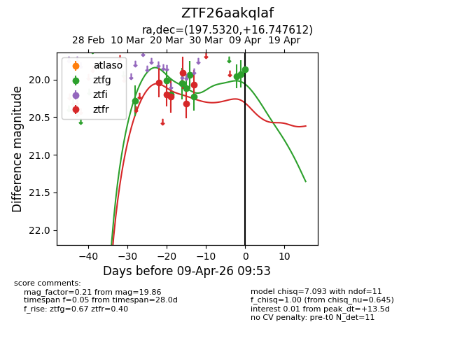
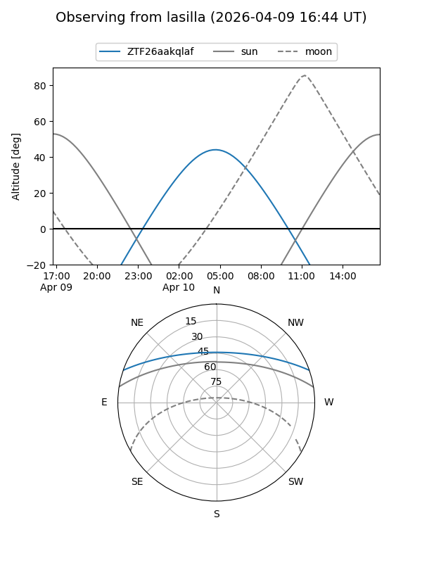
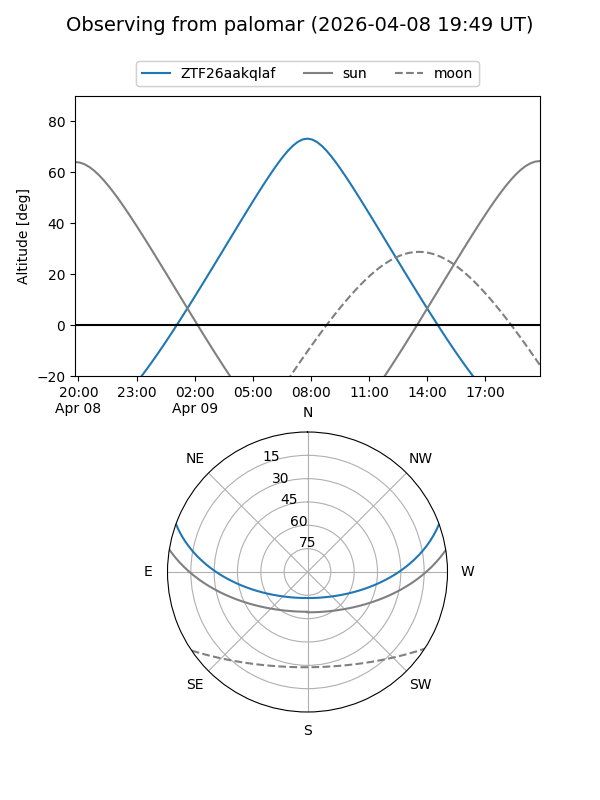
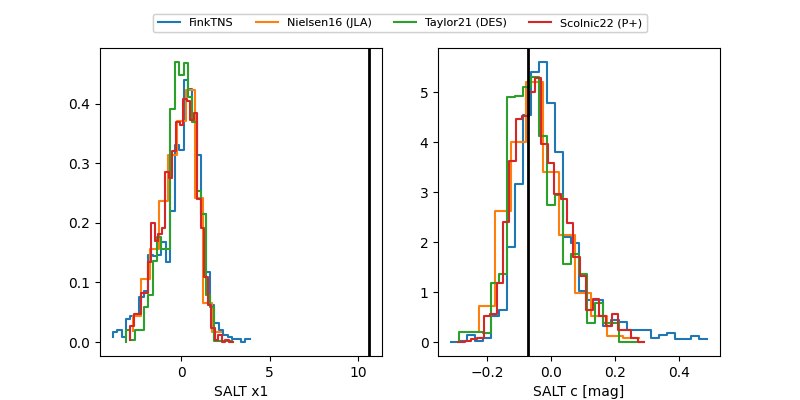

ZTF26aakqlaf
Target ZTF26aakqlaf at 2026-04-09 10:01
Aliases and brokers:
FINK: link
Lasair: link
ALeRCE: link
alt names
ZTF26aakqlaf (ztf,fink_ztf)
Coordinates:
equatorial (ra, dec) = 197.5320,+16.74761
equatorial (HMS+DMS) = 13:10:07.69,+16:44:51.40
galactic (l, b) = (326.5099,+78.75432)
Flags:
Photometry:
last ztfg=19.86, ztfr=20.07
10 ztfg, 6 ztfr detections
Lightcurve

Visibility


Additional plots
